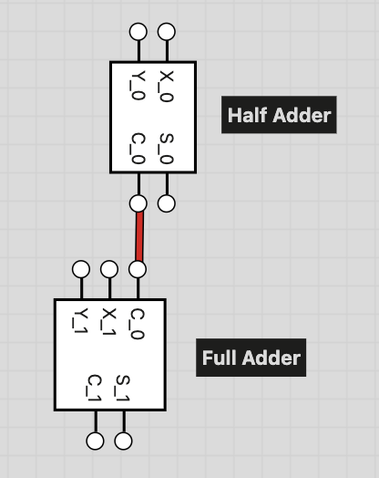

Deliverable 1: Digital Logic x Metaphysics
2-bit addition circuit block diagram construction:
As seen in the circuit block diagram above, the outputs C_1, S_1, and S_0 form the sum, in that order. C_1 is the leftmost (most significant) bit and S_0 is the rightmost (least significant) bit. I knew that I would need some combination of half and full adders to create this circuit capable of 2-bit addition, and thinking about the inputs and outputs that would be needed was most helpful. I knew that three output bits would be necessary since our largest possible calculation with two bits (11+11=110) results in three digits. From there, I thought about the process of adding each bit, and how the carrying process would affect the final output. I knew I would need a half adder to calculate the sum of the first bits, and I knew that I would need a full adder to calculate the sum of the second bits since we also needed to account for carrying. From there, I was able to deduce that the Carry Out bit (C_0 in this diagram) from the half adder would have to become the Carry In bit for the full adder. Let's trace some examples to illustrate this!
Example 1: X = 01 and Y = 10
- Half Adder
- Input: X_0 = 1 and Y_0 = 0
- Output: C_0 = 0 and S_0 = 1
- Full Adder
- Input: X_1 = 0, Y_1 = 1 and C_0 = 0
- Output: C_1 = 0 and S_1 = 1
- Final Output:11
Example 2: X = 11 and Y = 01
- Half Adder
- Input: X_0 = 1 and Y_0 = 1
- Output: C_0 = 1 and S_0 = 0
- Full Adder
- Input: X_1 = 1, Y_1 = 0 and C_0 = 1
- Output: C_1 = 1 and S_1 = 0
- Final Output:100
2-bit subtraction circuit block diagram construction:

As seen in the circuit block diagram above, the outputs Bout, D_1, and D_0 form the difference, in that order. Bout is the leftmost (most significant) bit and D_0 is the rightmost (least significant) bit. Once again, I knew that I would need some combination of half and full subtractors to create this circuit capable of 2-bit subtraction, due to the fact that three output bits would once again be needed. From there, I thought about the process of subtracting each bit and went through several examples on my own, and I also considered how the borrowing process would affect the final output. Borrowing was harder for me to wrap my head around but constructing a truth table helped me see the pattern. Again, I knew I would need a half subtractor to calculate the difference of the first bits, and I knew that I would need a full subtractor to calculate the difference of the second bits, taking into account the borrow bit. From there, I was able to deduce that the Borrow Out bit (Bout in this diagram) from the half subtractor would have to become the Borrow In bit for the full subtractor. Let's trace some more examples to illustrate this!
Example 1: X = 11 and Y = 10
- Half Subtractor
- Input: X_0 = 1 and Y_0 = 0
- Output: Bout = 0 and D_0 = 1
- Full Subtractor
- Input: X_1 = 1, Y_1 = 1 and Bin = 0
- Output: Bout = 0 and D_1 = 0
- Final Output:001
Example 2: X = 10 and Y = 01
- Half Subtractor
- Input: X_0 = 0 and Y_0 = 1
- Output: Bout = 1 and D_0 = 1
- Full Subtractor
- Input: X_1 = 1, Y_1 = 0 and Bin = 1
- Output: Bout = 0 and D_1 = 0
- Final Output:001